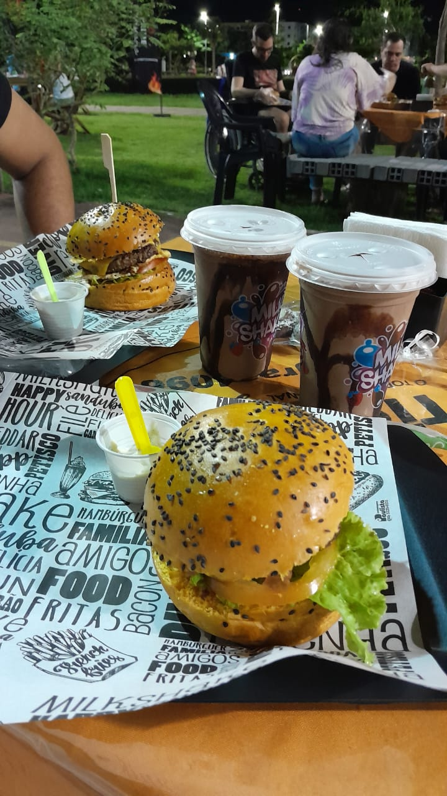
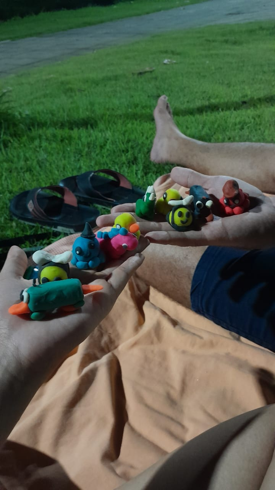
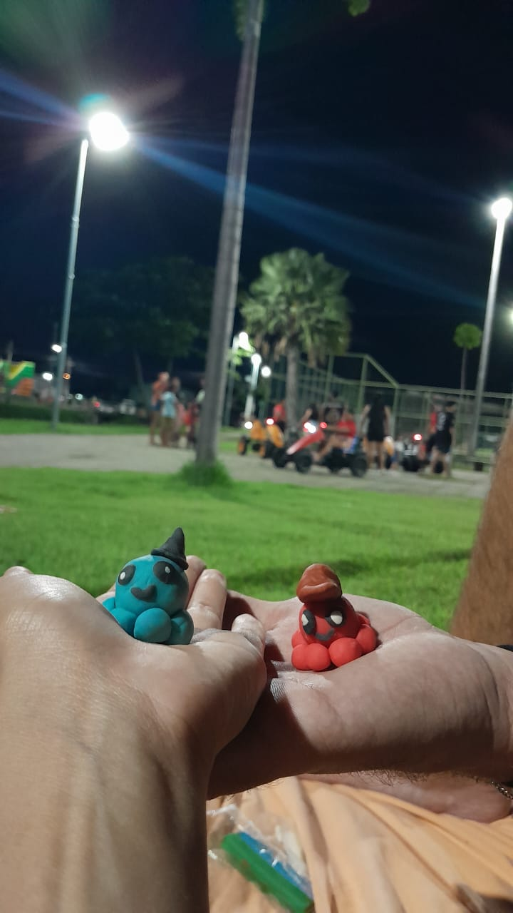
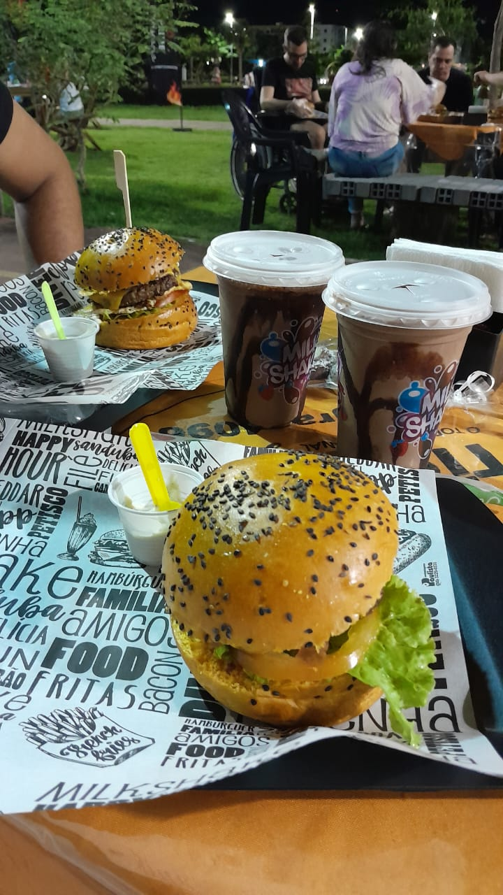
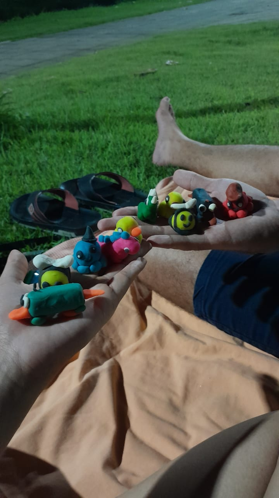
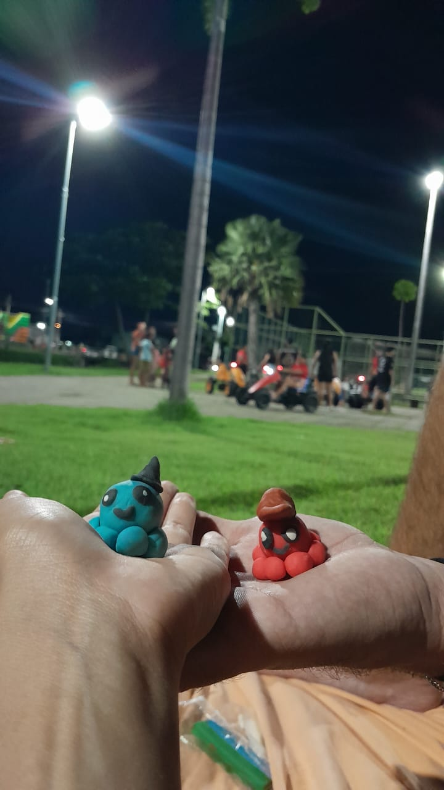

Dê um play, para ver um pouco da nossa história!
Nosso Amor em Momentos
O nosso primeiro registro juntos, tomando aquele sorvete (que por sinal foi melhor do que imaginei). Ali começava o registro de uma grande história. 📍Local: KI AÇAI. 📅Data 19/01/25
Outro registro em uma loja de sorvete. Fazer o quê, né? Se ela é doidinha por açúcar. Hihihihi. 📍 Local: KI AÇAI. 📅 Data: Não achei :(
Pera, outro local de açúcar? Tá errado isso, só pode! KKKK. Um dia incrível e inexplicável com palavras. Comemos comidas gostosas, tiramos algumas fotinhas e aproveitamos o local em comemoração ao nosso primeiro mês juntos!! Local: 📍 Consulado Café. 📅 Data 08/03/25

Ainda no mesmo dia das fotos acima, vivemos um momento inesquecível: a troca das nossas alianças de namoro. Foi um passo marcante na nossa jornada, cheio de emoção, felicidade e aquele friozinho na barriga. Depois de um filminho e da troca de presentes, o dia se tornou mais do que especial foi simplesmente indescritível. 📍 Local: Dentro do carro, ao lado do North 📅 Data: 08/03/25
TÁ AI UM ROLÊ QUE NUNCA PENSEI QUE IRIA SAIR! Uma corridinha de 2400m (só para constar, eu parei nos 2300 metros porque já estava morrendo), mas não disse nada, vai que, né? Ia ser zoado pela eternidade. Hihihihi. 📍 Local: Calçadão do Icaraí. 📅 Data 18/03/25
Esse dia será inesquecível: o dia do nosso rolê cultural. 1º -> Eletricidade, 2º -> Café, 3º -> Pinacoteca, 4º -> Alguma coisa tropical, 5º -> Trem. Um dia mais do que especial, em que praticamente passamos o dia juntos. Foi incrível. Onde vimos muitas obras de arte, julgamos horrores e rimos muito. 📍 LOCAL: Museu da Indústria e Pinacoteca. 📅 Data: 30/03/25

📍 LOCAL: Centro de Eventos do Ceará. 📅 Data: 05/04/25
 





Local: 📍 Praça Rachel de Queiroz. 📅 Data 12/04/25
Considerações Finais:
Achou que era o final? Aqui será onde o final se torna o começo. Este será o nosso álbum. Irei eternizar todos os nossos momentos aqui, para que nunca se percam com o tempo, e para que esses momentos incríveis possam sempre ser relembrados. Agradeço todos os dias por ter encontrado uma pessoa tão incrível quanto você. Que possamos cada vez mais preencher esse álbum. Eu te amo muito. Beijos.
Arthur & Anayrda